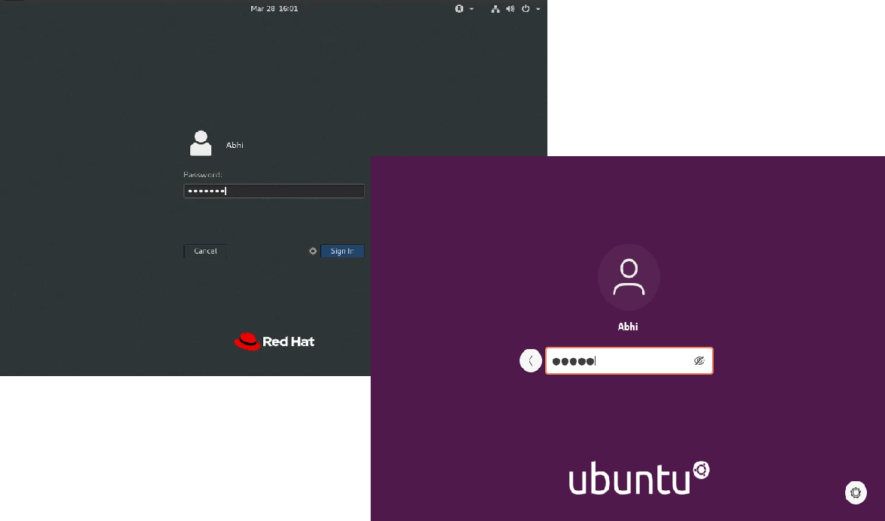

Linux Bootloader Process
Step-by-step guide for Red Hat and Ubuntu
Step 1: BIOS/UEFI Initialization
The system starts with BIOS or UEFI firmware initializing hardware components and locating the bootloader.
Step 2: MBR Partitions Selection
The BIOS/UEFI reads the Master Boot Record (MBR) or GUID Partition Table (GPT) to find the bootloader location.
Step 3: Bootloader Execution
The bootloader (GRUB for Red Hat and Ubuntu) is loaded into memory and executed.
Step 4: Kernel Loading
The bootloader loads the Linux kernel and initial RAM disk (initrd) into memory.

Step 5: Init System
The init system (systemd for modern Red Hat and Ubuntu) takes over and starts essential services.
Step 6: Systemd Service
Systemd is the default init system for modern Linux distributions, managing services and dependencies.
Step 7: User Login
The system reaches the login prompt or graphical interface, ready for user interaction.
